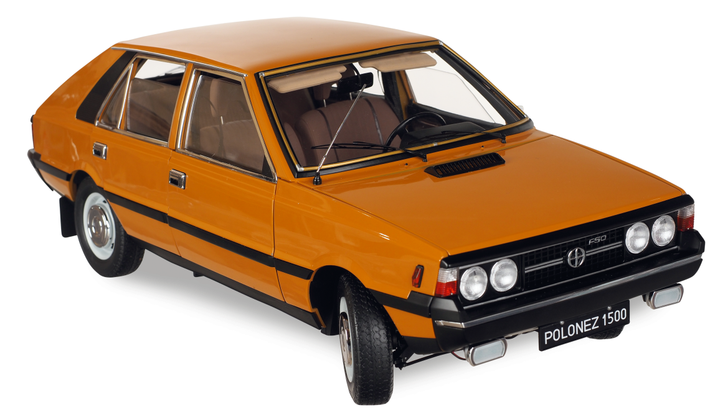

FSO Polonez – samochód osobowy produkowany przez Fabrykę Samochodów Osobowych w Warszawie od 3 maja 1978 roku do 22 kwietnia 2002 roku. Powstał jako następca Polskiego Fiata 125p, który był jednak produkowany równolegle aż do 1991 roku. Samochód przeszedł kilka większych modernizacji, wprowadzono także kolejne odmiany.
Fiat 126 potocznie "Maluch" (centoventisei) – samochód osobowy klasy aut najmniejszych, konstrukcji włoskiego producenta Fiat, produkowany w latach 1972–2000.